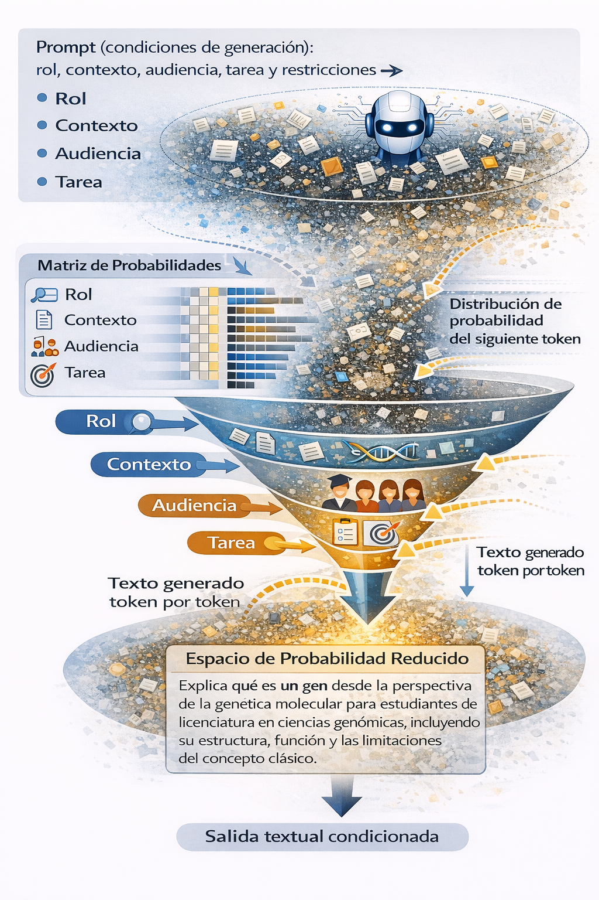

Capítulo 1 — Fundamentos del Prompting Científico
Marco conceptual y estructura formal del prompt
Objetivos de aprendizaje
Al finalizar este capítulo, el estudiante será capaz de:
- Explicar el funcionamiento general de un modelo de lenguaje generativo en términos de predicción probabilística condicionada al contexto.
- Analizar un prompt como una configuración estructurada de condiciones (rol, contexto, tarea, restricciones y salida esperada).
- Evaluar cómo la modificación de cada componente del prompt altera el tipo de respuesta generada.
- Diseñar prompts estructurados para tareas científicas o técnicas, justificando la elección de sus componentes.
- Reconocer que la coherencia de una respuesta generada no equivale necesariamente a validez científica.
1 Antes de comenzar
Si ya usas modelos generativos para programar, resumir papers o “explicar” resultados, entonces ya haces prompting. El objetivo de este curso no es enseñarte trucos de redacción ni plantillas rápidas: es convertir esa práctica en un instrumento metodológico, apropiado para investigación en ciencias genómicas.
La diferencia entre un uso casual y uno científico no es si la respuesta suena convincente, sino qué tipo de afirmación estás solicitando y con qué justificación podría sostenerse. Un mismo “explica” puede estar pidiendo, sin decirlo:
- una descripción (qué se reporta / qué se observa),
- una interpretación (qué podría significar),
- o una decisión (qué conclusión tomar).
En ciencia, mezclar esos niveles sin control produce un error típico: confundir plausibilidad textual con validez.
Epistemología (en este curso): trata de qué tan justificadas están las afirmaciones que aceptas como resultado.
Un prompt “científicamente usable” especifica (aunque sea de forma mínima): 1) el tipo de afirmación buscada, 2) el tipo de evidencia que la respaldaría, 3) y el alcance/limitaciones de la salida.
En este curso, los términos prompt e instrucción se utilizarán de manera equivalente.
2 IA generativa y modelos de lenguaje (LLMs)
2.1 ¿Qué es la IA generativa?
La IA generativa se refiere a modelos computacionales capaces de generar texto, código u otros contenidos a partir de patrones aprendidos en grandes volúmenes de datos.
- No razona de forma deliberativa como un humano
- No tiene acceso directo al mundo ni a tus experimentos
- No valida conceptos biológicos por sí mismo
- Predice secuencias de texto plausibles
 Esquema ilustrativo del ecosistema de IA generativa. Fuente: Multi Clouds IT Blog.
Esquema ilustrativo del ecosistema de IA generativa. Fuente: Multi Clouds IT Blog.
La figura se presenta como referencia visual para ubicar la IA generativa dentro del ecosistema general de la inteligencia artificial.
En este curso, el interés se centra únicamente en esta región, ya que el prompting es una forma de interacción con modelos de lenguaje generativos, no con todos los sistemas de IA.
2.2 ¿Qué es un LLM?
Un LLM (Large Language Model) es un modelo de inteligencia artificial entrenado con grandes volúmenes de texto para aprender patrones del lenguaje y predecir la siguiente palabra (token) en una secuencia.
 Fuente (esquema ilustrativo): Multi Clouds IT Blog, Generative AI: Conceptos clave
Fuente (esquema ilustrativo): Multi Clouds IT Blog, Generative AI: Conceptos clave
La figura representa de forma simplificada el tipo de datos utilizados durante el entrenamiento de un modelo de lenguaje y las capacidades generales que emergen de ese proceso. No se abordan aquí los detalles matemáticos del entrenamiento; el interés del curso se centra en la interacción con el modelo ya entrenado.
Características clave
- Aprende a partir de datos textuales masivos.
- No “entiende” el contenido como un humano; modela probabilidades.
- Funciona a nivel de tokens, no de ideas o conceptos.
- Puede generar texto coherente, responder preguntas y explicar procedimientos.
Qué puede hacer
- Explicar conceptos técnicos.
- Sugerir estructuras de análisis o código.
- Resumir y reformular información.
- Asistir en tareas de documentación y aprendizaje.
Qué NO puede hacer
- No puede validar por sí mismo conocimiento científico.
- Validar la veracidad de resultados experimentales.
- Entender causalidad biológica.
- Sustituir el criterio y la responsabilidad humana.
- Un LLM no conoce: predice texto condicionado al contexto.
- El conocimiento científico sigue siendo responsabilidad del estudiante.
El modelo solo tiene acceso al prompt y al contexto proporcionado. Parámetros como la temperatura influyen en la variabilidad de la respuesta, pero no garantizan calidad ni corrección científica.
2.3 Predicción probabilística y generación autoregresiva
Un modelo de lenguaje intenta aproximar una probabilidad condicional de la forma:
[ P(y | x) ]
donde:
- (x) representa el contexto (prompt + conversación previa),
- (y) representa la respuesta generada (secuencia de tokens).
Esto se interpreta como:
La probabilidad de generar una respuesta (y), dado el contexto (x).
En la práctica, el modelo no genera toda la respuesta de una vez, sino token por token, estimando probabilidades condicionales sucesivas:
[ P(t_1 | x), P(t_2 | t_1, x), P(t_3 | t_1, t_2, x), ]
Este proceso se conoce como generación autoregresiva.
Un token es una unidad de texto que usa el modelo (puede ser una palabra, parte de una palabra o un símbolo).
Un LLM no verifica si algo es verdadero.
No accede a experimentos.
No valida hipótesis.
Lo que hace es estimar:
¿Qué secuencia de texto es más probable dado lo que se le pidió?
En términos formales, genera una respuesta con alta probabilidad condicionada al contexto (x).
Coherencia no equivale a validez científica.
Si quieres ver el flujo completo (tokens → embeddings → logits → muestreo), consulta el apéndice from-prompt-to-answer.
2.4 Alineación y optimización por preferencia humana
Hasta ahora hemos descrito cómo el modelo predice texto.
Sin embargo, los LLMs modernos no se quedan en el entrenamiento probabilístico inicial (pretraining).
Después de aprender a modelar el lenguaje, pasan por una fase adicional llamada alineación.
¿Qué es la alineación?
Es el proceso mediante el cual el modelo se ajusta para producir respuestas que:
- Sean útiles.
- Sean seguras.
- Sean aceptables socialmente.
- Se ajusten a preferencias humanas.
Algunos métodos comunes incluyen:
- RLHF (Reinforcement Learning from Human Feedback): ajuste mediante retroalimentación humana.
- RLAIF (Reinforcement Learning from AI Feedback): ajuste usando evaluaciones de otro modelo.
- DPO (Direct Preference Optimization): optimización directa de preferencias sin aprendizaje por refuerzo tradicional.
- Constitutional AI: alineación guiada por principios normativos explícitos.
En todos los casos, la función objetivo deja de ser únicamente maximizar probabilidad lingüística, e incorpora señales de preferencia.
Implicaciones epistemológicas
Este punto es crucial para el prompting científico.
Un modelo alineado está optimizado para:
- Maximizar aceptación y utilidad.
- Reducir conflicto innecesario.
- Generar respuestas plausibles y coherentes.
Sin embargo, no tiene como función objetivo explícita:
- La búsqueda activa de falsación.
- La detección sistemática de debilidades metodológicas.
- El cuestionamiento espontáneo de hipótesis si no se le solicita.
Esto produce un fenómeno importante:
Preferencia humana no es equivalente a rigor científico.
En consecuencia, un modelo puede generar una explicación fluida, estructurada y convincente sin que ello implique validación conceptual o experimental.
La ausencia de crítica en una respuesta puede ser consecuencia de la ausencia de especificación crítica en el prompt.
Por esta razón, el diseño del prompt no solo condiciona la forma de la respuesta, sino también el nivel de exigencia epistemológica que el modelo ejecutará.
Ejemplo aplicado: ilusión de validación en análisis de expresión diferencial
El fenómeno descrito puede observarse claramente en el siguiente caso:
Interpreta estos resultados de expresión diferencial y confirma si apoyan mi hipótesis.Desde una perspectiva técnica, el modelo puede:
- Reorganizar los resultados.
- Construir una narrativa coherente.
- Destacar genes sobreexpresados compatibles con la hipótesis.
- Formular una conclusión plausible.
Sin embargo, esto no implica validación científica.
El modelo no:
- Verificó supuestos estadísticos.
- Evaluó tamaño de efecto ni potencia estadística.
- Contrastó hipótesis alternativas.
- Examinó sesgos de normalización o batch effects.
- Realizó inferencia causal.
Lo que hizo fue generar una respuesta con alta probabilidad condicionada al contexto.
En un sistema alineado por preferencia humana, la instrucción “confirma si apoyan mi hipótesis” introduce un sesgo implícito: favorece una narrativa confirmatoria.
El modelo puede entonces producir una interpretación coherente que refuerce la hipótesis inicial sin cuestionarla críticamente.
Reformulación epistemológicamente robusta
Una versión metodológicamente más rigurosa sería:
1. Describe los resultados sin interpretación.
2. Identifica supuestos estadísticos implícitos.
3. Señala posibles limitaciones metodológicas.
4. Genera al menos dos hipótesis alternativas compatibles con los datos.
5. Indica qué evidencia adicional sería necesaria para validar cada hipótesis.Aquí el prompt no solicita confirmación, sino evaluación estructurada.
La diferencia no es semántica.
Es epistemológica.
El modelo ejecuta el tipo de razonamiento que el prompt especifica.
Modelos, alineación y riesgo de complacencia
No todos los modelos comerciales o abiertos implementan la alineación de la misma manera.
Aunque la arquitectura base (transformers autoregresivos) puede ser similar, las diferencias en los métodos de ajuste —como RLHF, RLAIF, DPO o enfoques tipo Constitutional AI— influyen en el comportamiento observable del modelo.
Estas diferencias no determinan el rigor científico de la respuesta, pero sí pueden afectar:
- El nivel de confrontación espontánea.
- La tendencia a suavizar críticas.
- La forma en que responde ante hipótesis implícitas del usuario.
- El grado de intervención de filtros de seguridad.
Es importante enfatizar que:
Un modelo más “directo” no es necesariamente más riguroso. Un modelo más “amable” no es necesariamente menos capaz.
El comportamiento final depende tanto del método de alineación como del diseño del prompt.
La siguiente tabla presenta una comparación orientada específicamente al riesgo de complacencia en contextos científicos.
Modelos, alineación y riesgo de complacencia
| Modelo | Tipo | Método de alineación reportado | Nivel de alineación por preferencia | Tendencia a suavidad | Comentario epistemológico | Recomendación para uso científico |
|---|---|---|---|---|---|---|
| GPT-4 / GPT-4o / GPT-5 (OpenAI) | Cerrado | RLHF + optimización directa de preferencias (DPO-like) | Alto | Media–Alta | Optimizado para utilidad y seguridad. Puede suavizar críticas si no se especifica rol crítico. | Muy adecuado para análisis complejo si se especifican tareas adversariales explícitas (revisor crítico, falsación, contraejemplos). |
| Claude (Anthropic) | Cerrado | Constitutional AI + RLHF | Alto | Alta | Fuerte tendencia a diplomacia y cautela. Reduce confrontación directa. | Útil para redacción y estructuración. Requiere prompts que exijan crítica estructurada para evitar complacencia. |
| Gemini (Google) | Cerrado | RLHF + alineación propietaria | Alto | Media–Alta | Prudente y moderado. Alta coherencia, menor confrontación espontánea. | Adecuado para síntesis y organización. Especificar siempre “identifica limitaciones y supuestos”. |
| Grok (xAI) | Cerrado | RLHF con política de mayor permisividad | Medio | Baja–Media | Más directo en tono, pero no necesariamente más riguroso metodológicamente. | Puede ser útil para contraste de argumentos, pero no sustituye revisión metodológica formal. |
| DeepSeek (algunas versiones) | Abierto / Semi | RLHF o DPO (según paper) | Medio | Variable | Menor capa de seguridad en algunas versiones; comportamiento más variable. | Útil para experimentación técnica. Requiere validación cruzada con otras fuentes. |
| LLaMA-3 Instruct / LLaMA-2-Chat | Abierto | RLHF | Medio | Media | Depende del fine-tuning específico. | Bueno para entornos controlados o ajustes propios. No asumir consistencia crítica automática. |
| Mistral Instruct / Mixtral | Abierto | DPO / RLHF | Medio | Media | Menor alineación comercial fuerte; mayor variabilidad. | Adecuado para pruebas comparativas y entornos técnicos. Verificar siempre resultados. |
| Modelos base (no instruct) | Abierto | Sin alineación por preferencia | Bajo | Baja | No optimizados para interacción humana; respuestas menos diplomáticas pero más erráticas. | No recomendados para estudiantes principiantes. Útiles solo en investigación sobre comportamiento del modelo. |
Nota
Los métodos de alineación (RLHF, RLAIF, DPO, Constitutional AI) optimizan preferencia humana, no rigurosidad científica.
El nivel de crítica en la respuesta depende en gran medida del diseño del prompt y de la explicitación del rol (por ejemplo: revisor crítico, evaluador metodológico, abogado del diablo).
En consecuencia, la elección del modelo influye en el comportamiento general, pero el diseño del prompt sigue siendo la variable de control más importante.
3 ¿Qué es la ingeniería de prompts?
La ingeniería de prompts se refiere al conjunto de principios y prácticas orientadas al diseño, evaluación y refinamiento de instrucciones para interactuar de manera controlada y efectiva con sistemas de inteligencia artificial.
En este curso, la ingeniería de prompts se aborda como un proceso metodológico que requiere claridad, validación y pensamiento crítico.
4 ¿Qué es un prompt?
Un prompt puede entenderse como la interfaz escrita entre una persona y un sistema de inteligencia artificial. A través del prompt, el usuario expresa una intención, plantea una tarea y define, explícita o implícitamente, las condiciones bajo las cuales espera una respuesta. Esta lógica es análoga a la especificación de un problema computacional.
Los sistemas de IA no comprenden objetivos ni contextos por sí mismos. No verifican empíricamente si una afirmación es correcta, ni evalúan por sí mismos la relevancia científica del contenido generado.
Por esta razón, la estructura del prompt condiciona el espacio de respuestas posibles y el tipo de afirmación que el modelo puede producir.
En contexto científico, un prompt no es una pregunta abierta: es una especificación operativa de una tarea, cuyos términos delimitan qué tipo de inferencia será producida y qué tan evaluable resultará la salida.
- Una instrucción vaga genera una respuesta vaga.
- Una instrucción ambigua genera una respuesta ambigua.
- Una instrucción mal definida puede generar una respuesta convincente, pero incorrecta.
Explica qué es un gen.Este prompt indica una tarea (explicar), pero no define el nivel académico, el marco ni el propósito de la explicación. Como resultado, el sistema tenderá a generar una respuesta general y poco específica.
Prompt contextualizado en genética:
Explica qué es un gen desde la perspectiva de la genética molecular, dirigido a estudiantes de licenciatura en ciencias genómicas, incluyendo su estructura, función y las limitaciones del concepto clásico.En este caso, el prompt:
- delimita el dominio científico,
- define la audiencia,
- y acota el alcance conceptual.
La IA no “comprende” mejor el tema, pero opera bajo restricciones más claras, lo que incrementa la calidad epistemológica de la respuesta.

Los modelos de lenguaje generan texto de forma autoregresiva, estimando en cada paso la distribución de probabilidad del siguiente token. El prompt introduce condiciones de generación (rol, contexto, audiencia y tarea) que restringen el espacio probabilístico del modelo, reduciendo los grados de libertad y dando lugar a una salida textual condicionada y más específica.
5 El prompt como diseño de instrucciones
Una idea central de este curso es que el prompting no consiste en “preguntar mejor”, sino en diseñar instrucciones.
Diseñar un prompt implica tomar decisiones conscientes sobre:
- Qué información se proporciona.
- Qué se espera exactamente como resultado.
- Qué límites existen.
- Cómo se evaluará la respuesta.
Desde esta perspectiva, un prompt se asemeja más a un protocolo, una especificación o un instructivo técnico que a una pregunta informal.
6 Componentes de un prompt como variables de control
Un prompt no es solo una instrucción escrita: es una configuración de condiciones iniciales que delimitan el espacio de respuestas posibles.
Cada componente introduce una restricción operativa que reduce ambigüedad y acota el rango de interpretaciones posibles. En conjunto, determinan:
- qué información puede utilizar el modelo,
- qué tipo de tarea debe ejecutar,
- bajo qué supuestos y límites explícitos debe operar,
- y en qué formato será evaluable la respuesta.
En este sentido, los componentes del prompt funcionan como variables de control metodológico, no como adornos retóricos.
Para efectos metodológicos, trabajaremos con un conjunto de componentes mínimos que permiten estructurar un prompt de forma clara, reproducible y evaluable:
6.1 1. Rol (¿Quién responde?) :
El rol define el marco interpretativo desde el cual el modelo organizará la información.
Ejemplos de formulación:
- Actúa como un asistente de investigación en bioinformática.
- Actúa como un analista de datos genómicos con experiencia en RNA-seq.Cómo elegir un rol sin caer en vaguedades
El rol no debe limitarse a una etiqueta profesional amplia como “investigador” o “experto”.
Un buen rol indica la función concreta que se está desempeñando dentro de una fase específica del proceso científico.
La siguiente tabla muestra cómo transformar roles vagos en roles operativos:
| En lugar de escribir… | Especifica el rol como… | Qué función cumple | Tipo de producto esperado |
|---|---|---|---|
| Actúa como investigador | Revisor de literatura en genética molecular | Sintetiza información publicada | Resumen estructurado |
| Actúa como experto en bioinformática | Analista de RNA-seq | Describe y organiza un pipeline | Lista de pasos justificados |
| Actúa como científico | Diseñador experimental | Propone validaciones con controles | Diseño experimental claro |
| Actúa como asesor | Evaluador metodológico | Identifica debilidades técnicas | Lista de limitaciones |
| Actúa como especialista | Autor de propuesta de investigación | Justifica relevancia e impacto | Argumento estructurado |
Un rol bien definido no solo indica quién responde, sino qué está haciendo exactamente dentro del proceso de trabajo.
Ejemplo aplicado: roles a lo largo del proceso de publicación científica
En la elaboración de un artículo científico intervienen distintas funciones. El rol definido en el prompt debe corresponder a la fase específica del proceso científico en la que se requiere asistencia.
El mismo modelo puede desempeñar funciones distintas según el rol configurado. Lo importante no es la etiqueta profesional, sino la actividad concreta que se está realizando.
Fases típicas del proceso y posibles roles asociados:
- Generación y delimitación de la idea → Analista de literatura científica.
- Diseño experimental → Diseñador experimental o evaluador metodológico.
- Análisis de datos → Analista de RNA-seq o revisor estadístico.
- Redacción del manuscrito → Redactor académico especializado.
- Revisión crítica previa al envío → Revisor metodológico escéptico.
- Respuesta a revisores → Autor que responde comentarios editoriales.
Por ejemplo:
Rol: Analista de literatura en genética molecular.
Tarea: Identifica vacíos conceptuales en estudios recientes sobre regulación transcripcional.no es equivalente a:
Rol: Revisor anónimo de revista especializada en genética.
Tarea: Señala debilidades metodológicas en el siguiente manuscrito.En ambos casos se trabaja sobre un artículo científico, pero el tipo de respuesta esperada cambia radicalmente según la función desempeñada. Un rol bien definido refleja la actividad específica que se está realizando dentro del proceso científico, no una identidad genérica.
Regla práctica:
Un buen rol responde a esta pregunta:
¿Qué está haciendo exactamente esa persona en este momento?
- Si no puedes responder esa pregunta con claridad, el rol sigue siendo demasiado general.
- Si el rol puede aplicarse a cualquier tarea científica sin cambiar nada, es demasiado general.
6.2 2. Contexto (¿Sobre qué?):
El contexto delimita el universo de referencia sobre el cual el modelo construirá su respuesta. Incluye información relevante sobre el problema, el dominio específico, el tipo de datos disponibles o el escenario en el que se formula la tarea.
En ausencia de contexto suficiente, el modelo amplía el rango de interpretaciones posibles y tiende a producir respuestas genéricas compatibles con múltiples escenarios.
Proporcionar contexto no significa “explicar más”, sino reducir ambigüedad y acotar el marco de interpretación. Con un contexto bien definido, el espacio de generación se restringe y la respuesta se vuelve más específica y pertinente.
El contexto no garantiza corrección científica, pero sí mejora la pertinencia de la respuesta.
Ejemplo comparativo
Explica qué es la expresión diferencial.vs
Explica qué es la expresión diferencial en el contexto de un análisis de RNA-seq en células tumorales comparadas con tejido sano.En el segundo caso, el contexto reduce el espacio de interpretación y orienta la respuesta hacia un escenario metodológico específico.
El contexto puede incluir:
- Dominio científico (genética molecular, bioinformática, microbiología).
- Organismo o sistema biológico.
- Tipo de datos (RNA-seq, ChIP-seq, variantes genómicas).
- Nivel académico de la audiencia.
- Propósito de la respuesta (introductorio, técnico, comparativo).
- Marco conceptual (clásico, evolutivo, clínico, computacional).
Ejemplo
Rol: Actúa como analista de RNA-seq.
Contexto: Se trata de datos de RNA-seq provenientes de muestras tumorales humanas cuyo objetivo es identificar genes diferencialmente expresados.Rol: Actúa como revisor de literatura en genética molecular.
Contexto: El siguiente texto corresponde a un artículo científico sobre regulación transcripcional en *Escherichia coli*, dirigido a una audiencia académica.Interacción entre Rol y Contexto
El rol define la función operativa que se desempeña.
El contexto define el escenario en el que esa función se ejerce.
Modificar uno sin ajustar el otro puede cambiar sustancialmente la naturaleza de la respuesta generada.
Por ejemplo, un “analista de RNA-seq” puede describir un pipeline general (sin contexto específico) o analizar datos tumorales concretos (con contexto definido). En ambos casos el rol es el mismo, pero el alcance interpretativo cambia.
De manera análoga, el mismo contexto puede producir respuestas distintas si el rol cambia (por ejemplo, analista de datos vs evaluador metodológico).
6.3 3. Tarea (¿Qué debe hacer?):
La tarea especifica la operación que el modelo debe ejecutar sobre la información disponible. No es simplemente “lo que quiero que haga”, sino el tipo de transformación solicitada: describir, comparar, sintetizar, evaluar, proponer, entre otras.
En términos operativos, la tarea condiciona el tipo de salida que puede producirse. Cambiar el verbo puede modificar significativamente la naturaleza de la respuesta.
Por ejemplo:
Describe las funciones conocidas del gen TP53.no es equivalente a:
Evalúa la evidencia que respalda el papel del gen TP53 en la regulación del ciclo celular.En el primer caso, se solicita una caracterización informativa. En el segundo, se solicita una operación de análisis que implica criterios implícitos de valoración.
Por esta razón, la tarea debe formularse con precisión: el verbo elegido define el tipo de operación cognitiva que se espera del modelo.
En ciencia, formular la tarea con precisión no es una cuestión estilística, sino metodológica.
En ausencia de especificidad operativa, el modelo amplía el espacio de interpretación y tiende a producir respuestas genéricas.
Ejemplos de formulaciones poco específicas
Tareas vagas amplían innecesariamente el rango de posibles respuestas:
- “Habla sobre…”
- “Comenta…”
- “Dime qué piensas…”
- “Explícame todo…”
Una tarea metodológicamente bien construida debe:
- Incluir un verbo claro.
- Indicar el objeto de la acción.
- Delimitar el enfoque cuando sea necesario.
Ejemplos:
Resume los conceptos principales del texto en no más de 150 palabras, evitando añadir interpretaciones no explícitas.
Compara dos enfoques metodológicos utilizados en análisis de expresión diferencial, destacando diferencias en diseño experimental y supuestos estadísticos.
Enumera los pasos necesarios para realizar un análisis diferencial de expresión en RNA-seq, indicando brevemente el propósito de cada paso.
Analiza la metodología utilizada en el estudio, enfocándote exclusivamente en el diseño experimental y los controles empleados.Integración: Rol, Contexto y Tarea
Estos tres componentes no funcionan de manera aislada.
- El rol define la función que se desempeña.
- El contexto define el escenario en el que esa función opera.
- La tarea define la operación que debe ejecutarse.
Modificar cualquiera de estos elementos altera el tipo de respuesta que puede generarse.
Por ejemplo:
Rol: Analista de RNA-seq.
Contexto: Datos tumorales humanos.
Tarea: Describe los pasos del análisis diferencial.no es equivalente a:
Rol: Evaluador metodológico.
Contexto: Datos tumorales humanos.
Tarea: Analiza las limitaciones del diseño experimental.En ambos casos el contexto es el mismo, pero el cambio en rol y tarea transforma la naturaleza de la respuesta.
Del mismo modo, mantener el rol constante y modificar la tarea produce resultados distintos:
Rol: Analista de RNA-seq.
Contexto: Datos tumorales humanos.
Tarea: Enumera los pasos del pipeline.vs
Rol: Analista de RNA-seq.
Contexto: Datos tumorales humanos.
Tarea: Evalúa la robustez estadística del análisis.La combinación de rol, contexto y tarea configura el marco operativo dentro del cual el modelo generará su respuesta.
Un prompt científicamente útil no es la suma de partes independientes, sino la coherencia entre ellas.
6.4 4. Restricciones (¿Con qué límites?):
Las restricciones delimitan el alcance y los límites interpretativos de la salida. No se limitan a aspectos formales como la extensión o el formato; también pueden acotar el tipo de información que debe utilizarse y el nivel de profundidad esperado.
Al introducir restricciones explícitas, se reduce la ambigüedad y se acota el espacio de posibles respuestas.
Ejemplos:
- Limita la respuesta a 200 palabras y evita incluir información no mencionada en el texto proporcionado.
- Describe únicamente los métodos utilizados, sin interpretar los resultados.En ausencia de restricciones explícitas, el modelo puede extender la respuesta más allá del alcance metodológico deseado.
6.5 5. Salida esperada (¿En qué formato?):
La salida esperada especifica la forma en que debe presentarse la respuesta. Aunque pueda parecer un detalle menor, el formato influye directamente en la claridad, evaluabilidad y posible reutilización del resultado.
Definir la salida no mejora el “razonamiento” del modelo, pero sí mejora la organización de la información y facilita su análisis posterior.
Por ejemplo:
Presenta la respuesta en una tabla con tres columnas: gen, función reportada y referencia mencionada en el texto.
Organiza la respuesta en una lista numerada y limita cada punto a un máximo de tres líneas.Al especificar el formato, se reduce ambigüedad y se facilita la revisión crítica del contenido generado.
Ejemplos:
- Devuelve la respuesta como una lista de viñetas.
- Organiza la información en una tabla comparativa.
- Presenta la explicación en pasos numerados, uno por línea.La salida esperada no define el contenido del conocimiento generado, sino su estructura y forma de presentación. Especificar la salida permite producir resultados reutilizables (por ejemplo, en notebooks, reportes o pipelines), sin alterar la validez epistemológica de la información. Ejemplos detallados de formatos de salida se presentan en el Apéndice A
7 Ejemplos completos
estructurado
Rol: Actúa como revisor de literatura en genética molecular.
Contexto: El siguiente texto corresponde a un artículo científico sobre regulación transcripcional en *Escherichia coli*, dirigido a una audiencia académica.
Tarea: Resume el contenido destacando el objetivo del estudio, la metodología utilizada y los principales resultados.
Restricciones: No incluyas interpretaciones adicionales ni información que no esté explícitamente mencionada en el texto.
Salida esperada: Presenta el resumen en un solo párrafo de máximo 150 palabras.más natural
Actúa como revisor de literatura en genética molecular.
Resume el siguiente artículo sobre regulación transcripcional en *Escherichia coli*, destacando objetivo, metodología y resultados principales.
No incluyas interpretaciones adicionales y limita el resumen a un máximo de 150 palabras en un solo párrafo.Ejemplo 2:
estructurado
Rol: Actúa como analista de RNA-seq.
Contexto: Se trata de datos de RNA-seq provenientes de muestras tumorales humanas cuyo objetivo es identificar genes diferencialmente expresados.
Tarea: Explica cómo se analiza la expresión génica en este tipo de datos.
Restricciones: Utiliza lenguaje técnico apropiado para estudiantes de licenciatura en ciencias genómicas.
Salida esperada: Presenta la explicación en pasos numerados.mas natural
Actúa como analista de RNA-seq.
Explica cómo se analiza la expresión génica utilizando datos de RNA-seq en muestras tumorales humanas, considerando que el objetivo es identificar genes diferencialmente expresados.Presenta la explicación en pasos numerados.La evaluación y verificación del contenido generado por la IA no se abordan en este capítulo. Estos aspectos, fundamentales en contextos científicos, se tratarán de manera explícita en el siguiente capítulo.
8 Tipos y técnicas fundamentales de prompting
Las técnicas de prompting no deben entenderse como “formatos” o trucos operativos, sino como mecanismos de regulación estructural del espacio de inferencia del modelo.
Desde una perspectiva probabilística, cada técnica modifica el contexto ( x ) que condiciona la distribución ( P(y x) ). Al alterar la información disponible en la instrucción, se restringe —o amplía— el conjunto de posibles salidas y se reduce (o incrementa) la ambigüedad interpretativa.
En contextos científicos, estas técnicas funcionan como instrumentos de control inferencial: permiten modular el grado de libertad del modelo y mejorar la trazabilidad del resultado, aunque no garantizan validez epistemológica.
A continuación se presentan tres estrategias fundamentales.
8.1 A) Prompting directo (zero-shot)
Consiste en dar una instrucción sin ejemplos previos ni estructura adicional.
Resume la función del gen lacZ en Escherichia coli.Describe brevemente qué es la expresión génica.En términos inferenciales, el zero-shot deja al modelo con mayor libertad interpretativa. La distribución de posibles respuestas es más amplia, ya que el contexto es mínimo.
Es adecuado cuando:
- la tarea es descriptiva y bien delimitada,
- el dominio conceptual es estándar,
- no se requiere un formato específico.
Sin embargo, puede resultar problemático cuando:
- el nivel de profundidad esperado no está claro,
- el concepto admite múltiples enfoques,
- o se requiere precisión terminológica estricta.
El zero-shot no es una técnica inferior; simplemente implica mayor varianza potencial en la salida.
8.2 B) Prompting con ejemplos (few-shot)
En el few-shot prompting se incluyen uno o más ejemplos que actúan como referencia explícita para el formato, el criterio o el nivel de detalle esperado.
Resume el siguiente texto en no más de 5 líneas, destacando objetivo y conclusión.
Ejemplo:
Texto: “Este estudio analiza…”
Resumen: “El estudio investiga…”
Texto a resumir: …Clasifica los siguientes genes según su función reguladora.
Ejemplo:
Gen: lacI → Regulador transcripcional represor
Gen: crp → Regulador transcripcional activador
Genes a clasificar: …Desde el punto de vista probabilístico, los ejemplos reducen la dispersión de la distribución ( P(y x) ), ya que introducen patrones concretos que el modelo tenderá a imitar.
En contextos científicos, esto es especialmente útil para:
- disminuir ambigüedad sobre lo que se considera una respuesta adecuada,
- alinear la salida con convenciones académicas (resúmenes estructurados, tablas, definiciones técnicas),
- mantener consistencia conceptual y terminológica.
No obstante, los ejemplos también pueden introducir sesgos: si el ejemplo es conceptualmente pobre o metodológicamente débil, el modelo replicará esa estructura.
8.3 C) Prompting paso a paso (multi-step)
En este curso, multi-step prompting se refiere a la división explícita de una tarea compleja en una secuencia ordenada de pasos, cada uno con un objetivo definido.
No implica solicitar ni exponer el razonamiento interno del modelo, sino estructurar la instrucción para guiar la progresión lógica del resultado.
Primero identifica conceptos clave sobre regulación génica en E. coli.
Luego, lista bases de datos relevantes.
Finalmente, resume qué tipo de información aporta cada base de datos.Primero identifica qué tipo de datos se están analizando.
Luego, describe el método general de análisis apropiado.
Finalmente, menciona posibles fuentes de error o limitaciones del análisis.Desde una perspectiva inferencial, el multi-step prompting segmenta el proceso en sub-espacios de decisión más acotados, reduciendo la probabilidad de omisiones globales o respuestas excesivamente generales.
En contextos científicos resulta especialmente útil porque:
- facilita la trazabilidad del procedimiento,
- mejora la coherencia lógica entre etapas,
- obliga a explicitar supuestos intermedios,
- y disminuye errores derivados de respuestas demasiado compactas.
Sin embargo, es importante subrayar que dividir una tarea en pasos no garantiza corrección científica. Puede generar una apariencia de rigor si los pasos están mal definidos o si las premisas iniciales son incorrectas.
8.4 Comparación conceptual
| Técnica | Qué modifica en el contexto | Qué reduce | Qué no garantiza |
|---|---|---|---|
| Zero-shot | Contexto mínimo | Rapidez y simplicidad | Precisión o nivel de detalle |
| Few-shot | Patrón explícito de salida | Ambigüedad y variabilidad formal | Corrección conceptual del ejemplo |
| Multi-step | Secuencia estructurada de tareas | Omisiones globales y desorden lógico | Validez científica del procedimiento |
En síntesis, estas técnicas no constituyen niveles de calidad, sino estrategias de control estructural del espacio de respuesta. Su elección depende del tipo de tarea, del nivel de precisión requerido y del grado de control inferencial que se desee ejercer.
En el siguiente capítulo analizaremos cómo el tipo de tarea —y particularmente el verbo que la define— determina el tipo de inferencia solicitada y el riesgo epistemológico asociado.
9 Ejemplos aplicados a ciencia y bioinformática
Los siguientes ejemplos ilustran situaciones frecuentes en bioinformática donde una instrucción vaga puede generar respuestas ambiguas o poco controladas. La reformulación estructurada permite reducir esa ambigüedad y mejorar la precisión contextual.
9.1 Resumen científico
Prompt poco definido:
Resume este artículo.Problemas principales:
- No se especifica extensión
- No se define enfoque
- No hay criterios de calidad
Prompt estructurado:
Actúa como asistente de investigación en bioinformática. Resume el siguiente texto en un máximo de 150 palabras, destacando objetivo, metodología y resultados principales. Utiliza lenguaje técnico y evita interpretaciones no respaldadas por el texto.9.2 Búsqueda de información científica
Prompt vago:
Busca información sobre miARN.Prompt mejor definido:
Identifica fuentes confiables sobre microARN en *Mus musculus*. Prioriza bases de datos especializadas y artículos de revisión. Presenta los resultados en una lista con una breve descripción de cada fuente.9.3 Planteamiento de preguntas científicas
Prompt vago:
¿Qué significa este resultado?Prompt mejor definido:
Actúa como asesor científico.
Dado el siguiente resultado experimental, plantea tres posibles interpretaciones, indicando supuestos y limitaciones de cada una.10 Ejercicios
10.1 (Obligatorio) — De pregunta vaga a prompt estructurado
Objetivo: Identificar problemas en instrucciones vagas y rediseñarlas como prompts estructurados.
Instrucciones:
- Identifica al menos tres problemas del siguiente prompt: > “Resume este texto sobre regulación génica en bacterias.”
- Rediseña la instrucción como un prompt estructurado que incluya:
- rol,
- contexto,
- tarea,
- restricciones,
- salida esperada.
- Explica brevemente cómo tu versión mejora la claridad de la instrucción original.
¿Qué tipo de respuesta esperas obtener ahora? ¿Qué tipo de afirmaciones podría generar el modelo? ¿Qué limitaciones seguirían presentes?
Nota: No es necesario ejecutar el prompt; se evaluará únicamente el diseño y la explicación.
Entregable
- Texto en Markdown que incluya:
- lista de problemas identificados,
- prompt rediseñado,
- explicación breve (5–8 líneas).
10.2 (Obligatorio) — Prompting aplicado a una tarea científica
Objetivo: Aplicar prompting estructurado en un contexto científico.
Escenario
Necesitas apoyo para recopilar información introductoria sobre un tema científico.
Instrucciones:
Diseña un prompt para obtener información sobre microARN en Mus musculus.
El prompt debe:
- especificar el tipo de fuentes deseadas (por ejemplo, bases de datos especializadas o artículos de revisión),
- definir claramente el formato de la salida,
- incluir suficiente contexto para orientar la respuesta.
Incluye una breve explicación de las decisiones de diseño tomadas.
Nota: No se evaluará el contenido de la respuesta, sino la claridad y estructura del prompt.
Entregable
- Prompt completo
- Breve explicación (máx. 150 palabras) que describa:
- los componentes incluidos,
- el propósito de cada uno dentro del prompt.
10.3 (Opcional) — Comparación de tipos de prompting
Objetivo: Distinguir entre distintos tipos de prompting y su aplicación práctica.
Instrucciones:
Para la siguiente tarea:
“Explicar la función de un gen en un organismo modelo”
- Propón:
- un prompt zero-shot,
- un prompt few-shot.
- Explica brevemente:
- en qué tipo de situación usarías cada uno,
- qué diferencias prácticas existen entre ambos enfoques.
Entregable
- Dos prompts (zero-shot y few-shot),
- Comparación escrita (8–12 líneas).
11 Cierre del capítulo
En este capítulo hemos analizado el prompt como una configuración estructurada de condiciones: una combinación coherente de rol, contexto, tarea, restricciones y formato de salida.
Diseñar un prompt no es redactar una pregunta atractiva, sino delimitar un marco operativo dentro del cual el modelo generará su respuesta.
Sin embargo, aún no hemos abordado una cuestión fundamental:
¿Qué tipo de afirmación estamos solicitando cuando formulamos una tarea?
Cambiar un verbo puede transformar una descripción en una interpretación, o una interpretación en una evaluación. En ciencia, estas diferencias no son estilísticas, sino metodológicas.
En el siguiente capítulo analizaremos cómo el tipo de tarea solicitada introduce distintos niveles de exigencia cognitiva y distintos riesgos epistemológicos.
El objetivo ya no será solo estructurar prompts, sino comprender las implicaciones de lo que pedimos y de lo que aceptamos como respuesta.
A partir de este punto, el diseño del prompt dejará de entenderse como una habilidad operativa y pasará a analizarse como una práctica metodológica.
12 Referencias
- Quintero-Barrent G., López de Ramos AL, Esteves Gonzáles Y. Manual de Buenas prácticas en la escritura de prompts. ISBN: 978-9962-8606-5-5. Julio 2025.
- Prompt Engineering Guide by DAIR.IA 2025 https://www.promptingguide.ai/es
Figuras:
- Figura 1, URL: https://madsblog.net/2025/01/06/generative-ai-conceptos-clave/